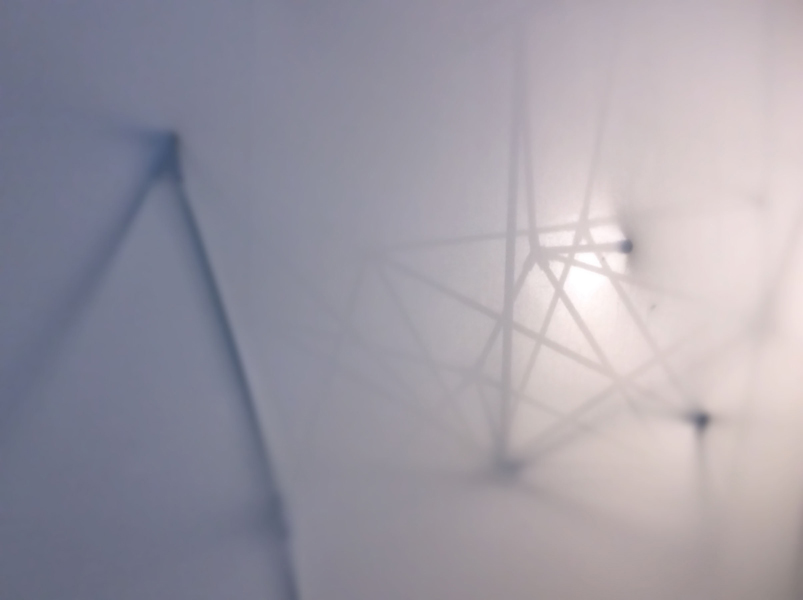
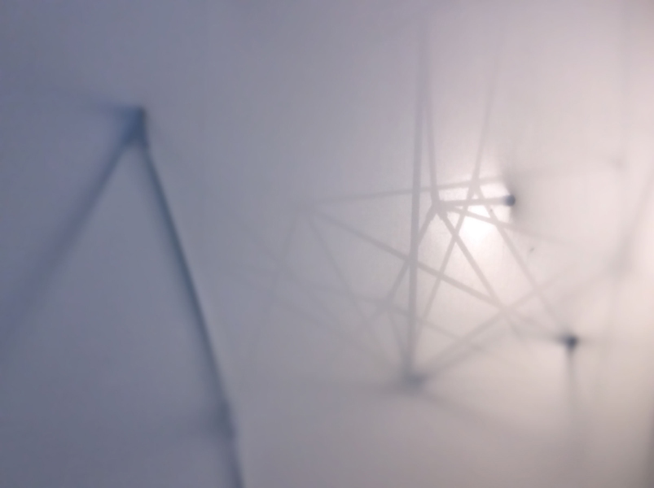
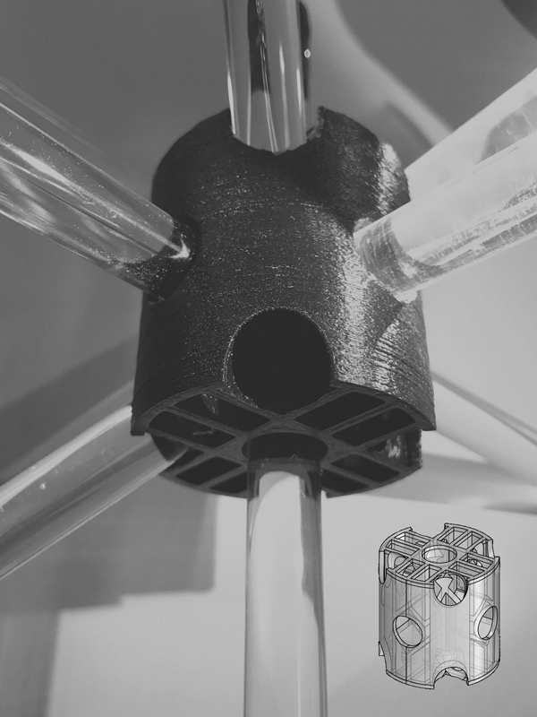
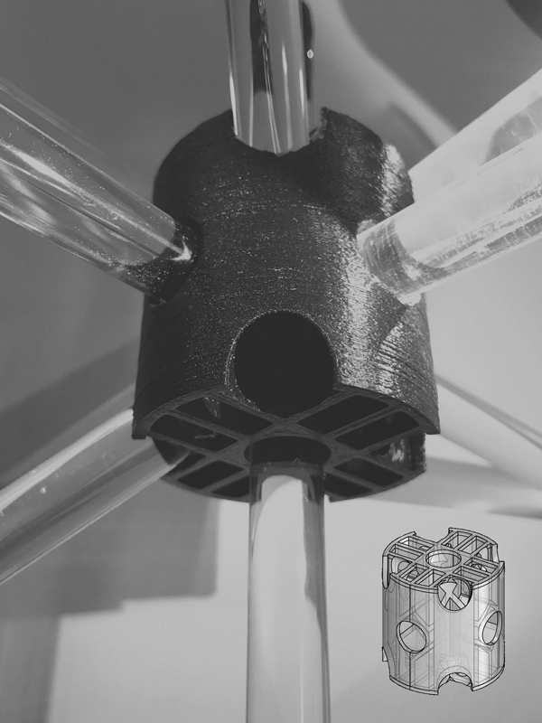
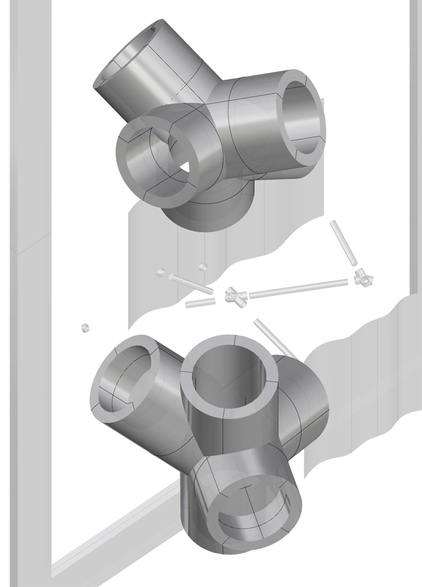
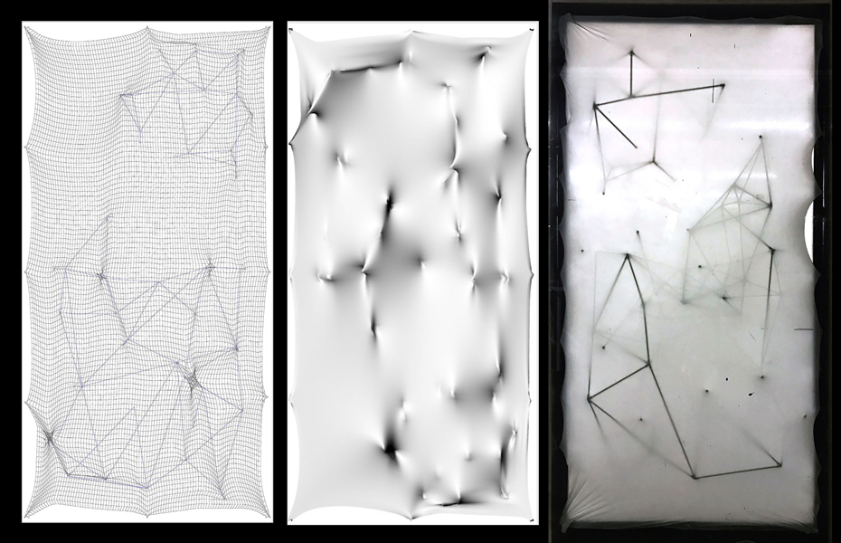
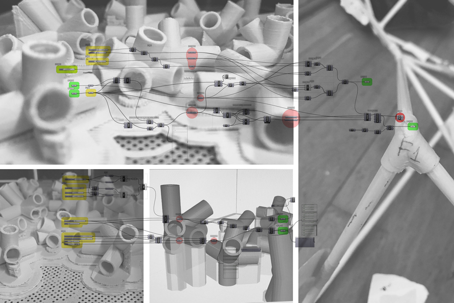
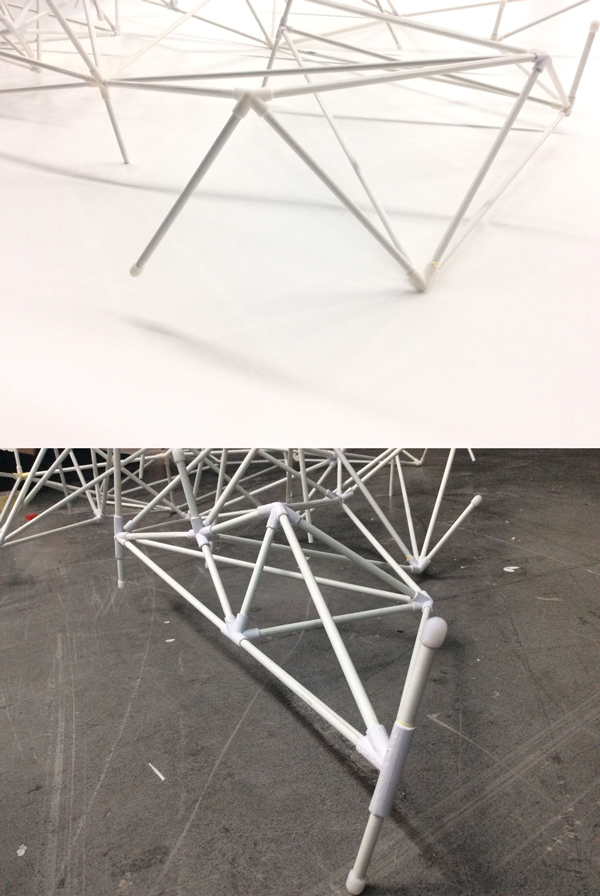
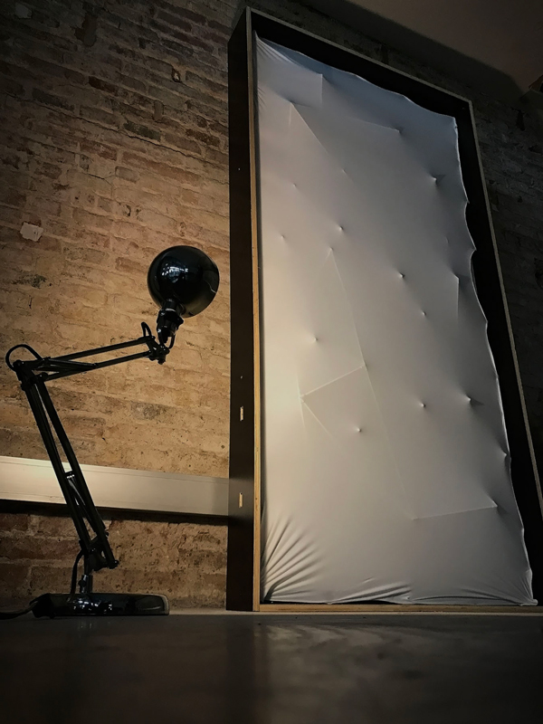
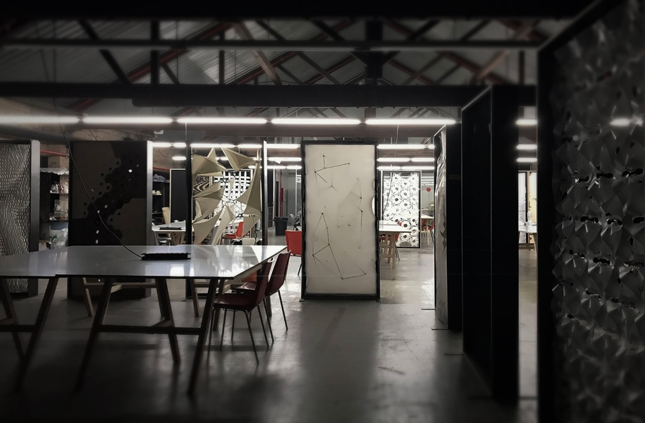

project
of digitally
fabricated
space
separator
проект
параметрически
произведённый
пространственного
разделителя
 


For this project given fixed dimensions of the frame and utilizing only, in our case, 3D printing and specific materials, we were tasked to develop a space divider for an open-plan workspace in the Institute of Advanced Architecture. The project done with Jasser Joan Salas Castro, Nustrat Tabassum, Ifthikar Mohamed Noordeen under supervision of Alex Dubor, Raimund Krenmuller, Ricardo Valbuena, Ricardo Mayor, Kunaljit Singh Chadha. More details here.
Task
 
Having fixed structural strategy we decided to interpret the structure as a whole and explore potential of unique and flexible elements. The resulting piece though had to be drastically shrunk. Moreover, through experiment we realized that not only does the piece have certain freedom in conjunction with the rods, the design itself can be much more flexible since production time practically does not depend on piece variability.
Prototype 1
Thus, instead of fixed angle access the nodes were generated parametrically based on a network of lines. The pieces could maintain features like through-out movable rods for more interactive experience. Additionally in order to preserve fabric we introduced cap elements for the rods.
System 2
Overall with the design we decided to try instead of developing fixture pieces to create tensile structure fully held by the fabric itself. So the rigid network of nodes and rods between them could be designed and assembled separately and introduced between two layers of flexible fabric leaving it functional for potential changes.
System
As part of the project we developed Grasshopper Script in order to generate nodes with specific sleeve length for intersecting line segment of the designed network. Around 50 different main joints were 3D-printed over 28 hours and 20 minutes combined using collectively 198 grams of materials with just 21,78% wasted on supports (later script has decreased need in them drastically due to variable orientation adjustment) and ready for assembly.
Code
In order to literally match the design a labeling system was introduced whereby each node received unique name and each rod was named by the names of the rods it was connecting or with marking if the rods were a dead-end and could all be cut to computationally measured dimensions. Having bigger length of the sleeves proven to help since both rods and nodes were rigid and the network gained spatial strength as it got further assembled so little tolerance in length allowed easier assembly.
Assembly
Not only was this a valuable experience as an introduction for the fabrication techniques. By this hands-on approach we got a practical feeling of workflow and design particularities one has to go through in a parametric and digitally fabricated design.
Result
The frame was introduced to the space. Most curious effects are created when one side is lit more than the other - creating peculiar game of shadows; at the same time having a non-translucent surface helps in daylight when many students are working simultaneously in the space. Additionally having preserved the fabric we managed also to save the pleasant tactile feel - with the rigid structure inside you can reach almost accidentally as if going in a thick fog.
Application
Для этого проекта, имея фиксированные габариты рамы и ограничиваясь использованием, в нашем случае, 3Д-печати и определённых материалов, мы должны были создать разделитель для рабочего пространства с открытой планировкой у нас же в институте. Проект выполнен совместно с Йассером Джоан Салас Кастро, Нустрат Табассум, Ифтикаром Мохамедом под руководством Алекса Дубора, Реймунда Кренмюллера, Рикаро Валбуэна, Рикардо Майора и Куналджита Сингх Чадха. Больше деталей можно найти тут.
Задача
Имея жёсткую стратегию для структуры по заданию, мы решили интерпретировать наш объект как единую систему и придать разнообразия и гибкости отдельным элементам. Разработанный элемент, однако, требовалось значительно уменьшить. Помимо этого, посредством экспериментов мы решили значительно увеличить степени свободы самого дизайна элемента и играть не только на взаимоотношении узлов со стержнями, но и за счёт разнообразия элементов, что задействует уникальный потенциал 3Д печати, так как нет значительной разницы во времени печати, в зависимости от узла.
Прототип 1
Так вместо жёстких углов мы параметрически создали звенья, основываясь на пространственной сети линий. Были сохранены узлы с возможностью использования сквозных стержней, для более интерактивного взаимодействия с объектом. Помимо этого, мы создали элементы покрыть концы стержней для сохранения ткани.
Типология 2
Для дизайна самой структуры мы решили не фиксироваться к ткани или к раме, а сделать висячую систему, зажатую между двумя натянутыми эластичными слоями ткани. Так структура может быть изменена впоследствии без необходимости радикально переделывать раму или заменять ткань.
Проект
Частью процесса стала разработка скрипта в Grasshopper для генерирования звеньев по линейным фрагментам спроектированной сети. Алгоритм подготовил для печати порядка 50 уникальных узлов. Печать заняла суммарно 28 часов и 20 минут, используя 198 грамм материалов тратя всего 21,78% на поддержки (последняя версия алгоритма значительно снизила необходимость в них в виде варьирующейся ориентации узлов).
Скрипт
Чтобы результат точно соответствовал дизайну, мы разработали систему ярлыков. Каждый узел получил уникальное имя, информирующие названия стержней, которые так же получали точно отмеренные по модели габариты для нарезки. Решение удлинить рукава элементов оказалось полезным, ибо и стержни и узлы, будучи жесткими элементами, быстро обретали жёсткость при сборке, и небольшая погрешность в длине помогала сборке.
Сборка
Этот опыт был крайне полезен не только с точки зрения освоения методов цифрового производства. Опробовав на себе подход от концепции до сборки, мы получили важный опыт для цифрового и параметрического дизайна в целом.
Результат
Разделитель был реализован и помещён в пространство. Наиболее уникальный эффект возникает, когда одна сторона освещена больше чем другая, создавая необычную игру теней. При этом, будучи непрозрачной, разделитель помогает в дневное время работать без отвлечения студентам по обеим сторонам. Более того, сохранив ткань целой, мы сохранили и приятный тактильный эффект, а жесткие структуры всплывают на поверхность как из плотного тумана.
Применение